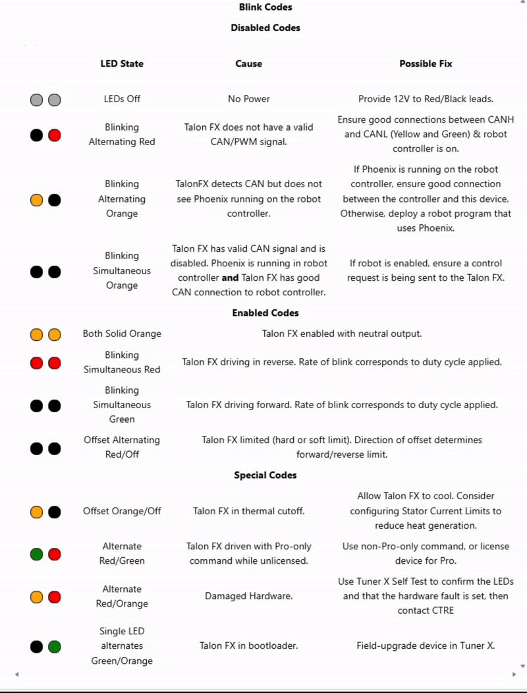
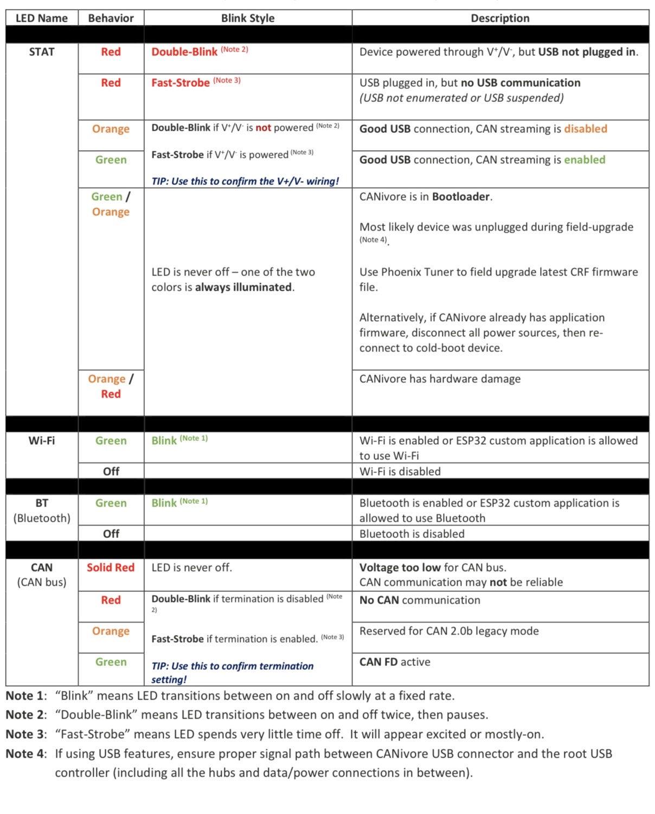
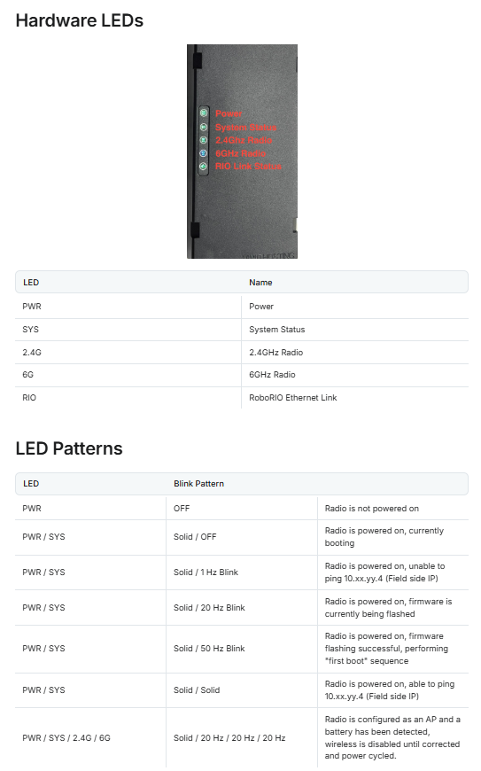
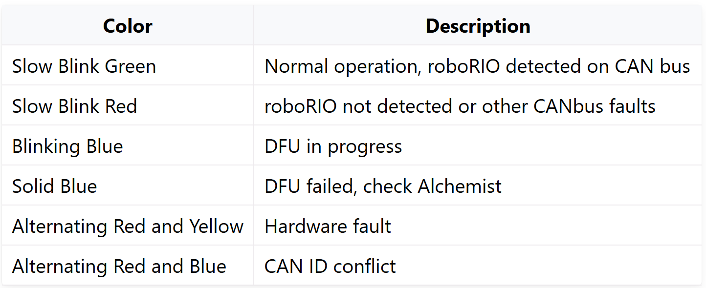
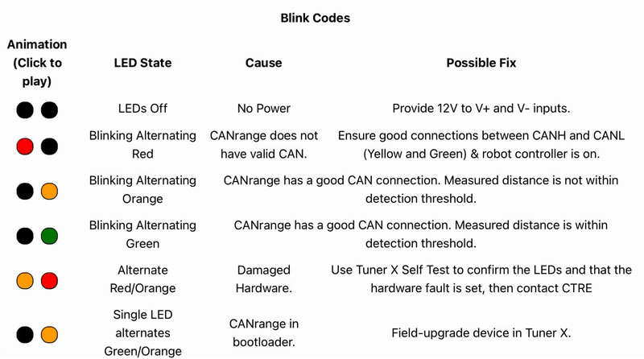
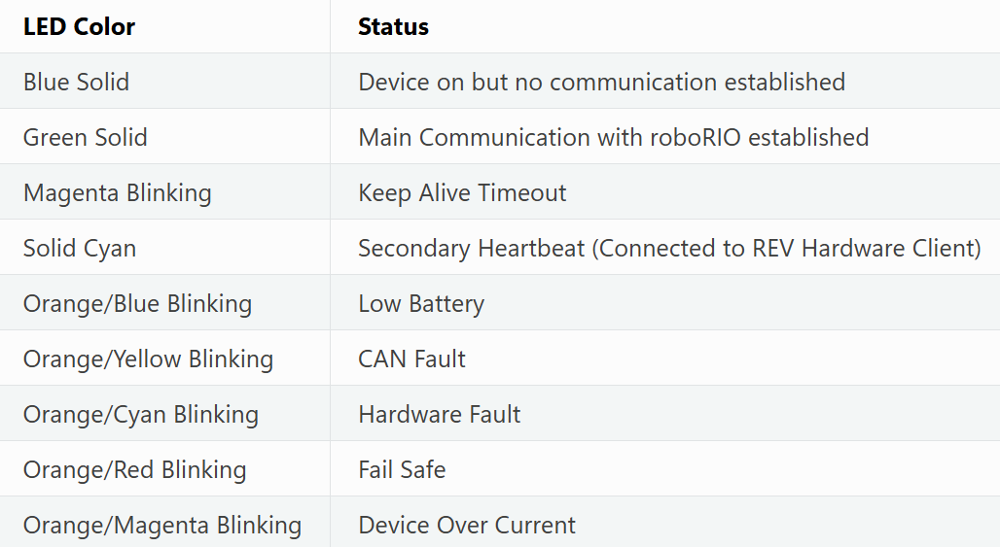

TalonFX Light Status

Pigeon Light Status

CANivore Light Status

Radio Light Status

Canandcolor Light Status

CAN Range Light Status

CAN Range Light Status
Roborio Light Status

PDP Light Status

Quiz For Status Lights
Ready to test what you know? This section lets you quiz yourself on different status lights from parts like Talons, Pigeons, and more. Want the full challenge? Go to "ALL" to cover every section at once. Just want to focus on one part? Choose a specific quiz to drill down on that device's lights only.
Talon FX Light Quiz
Pigeon Light Quiz
Canandcolor Light Quiz
Radio Light Quiz
CANivore Light Quiz
Roborio Light Quiz
PDP Light Quiz
CAN Range Light Quiz
All-in-One Status Light Quiz
About
This tool was made to simulate status light behavior in an organized way.
Special Thanks to Spartatroniks Members and Mentors!

Spartatroniks Links


Sources
Pigeon CTRCanandcolor
Radio
CANivore
CAN Range
RoboRIO
PDP
Made by Vincent Sanchez - Team 3512